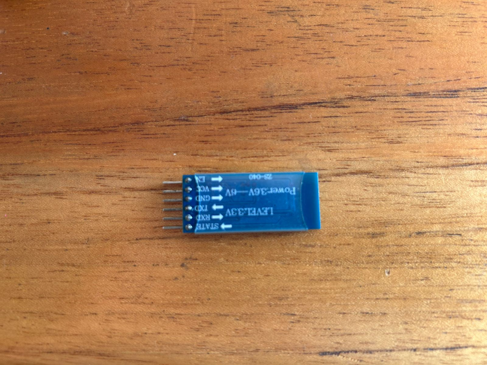
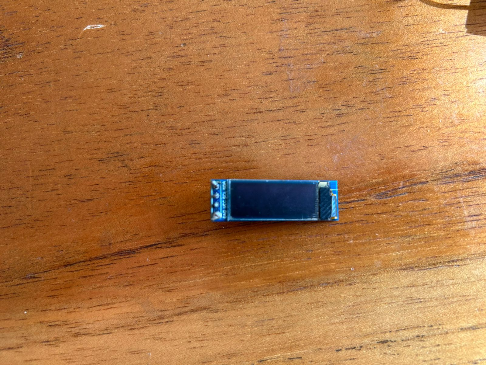
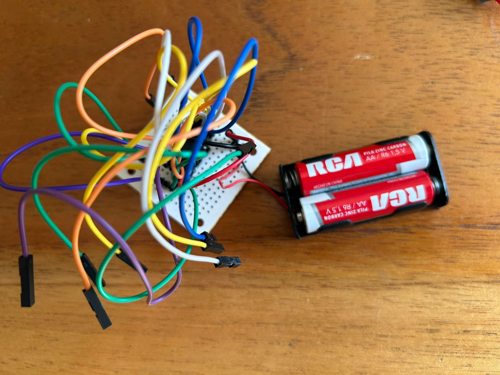
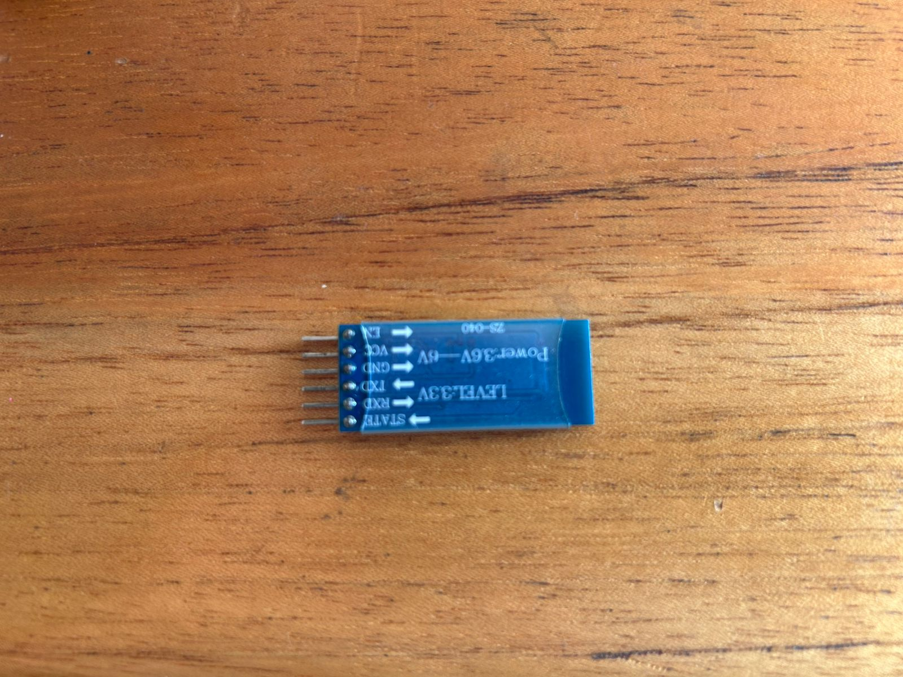
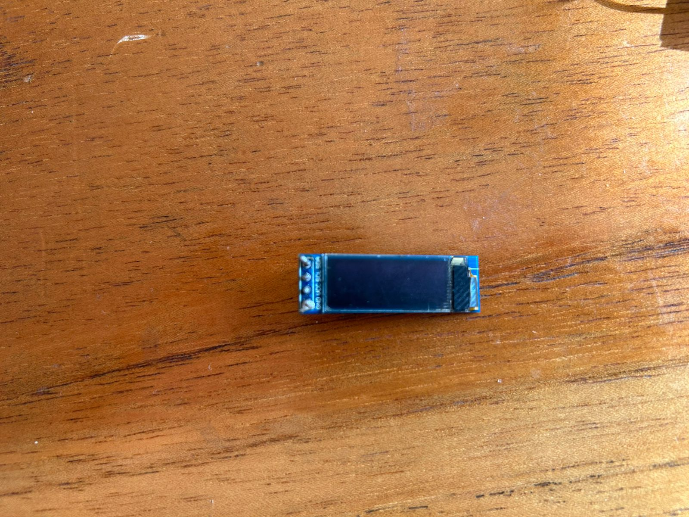
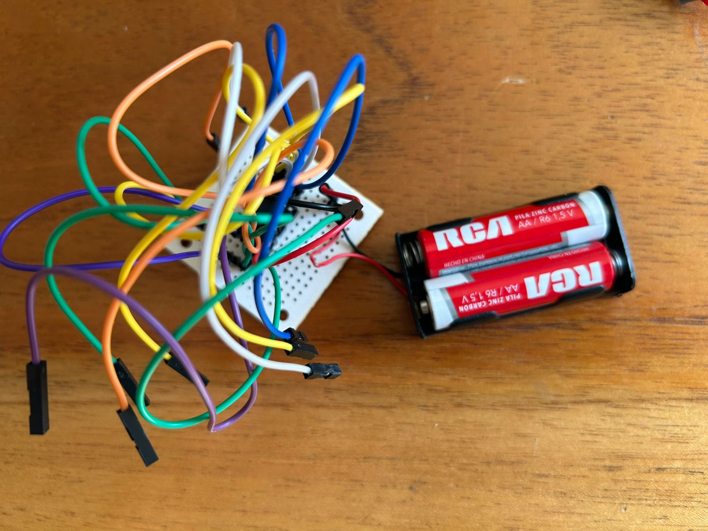

Portafolio de Actividades
Laboratorio de elementos programables
Departamento de Ciencias e Ingenierías | Universidad Iberoamericana Puebla, México.
Robot Móvil controlado por Bluetooth

Resumen
Este proyecto consiste en un robot controlado por Bluetooth utilizando un ATTiny85, un módulo HC-05, un controlador de motores L9110S y una pantalla OLED 128x32 para mostrar ojos animados. El robot puede moverse en diferentes direcciones (adelante, atrás, girar, detenerse) controlado desde un dispositivo móvil. La pantalla OLED muestra ojos animados para darle un aspecto interactivo.
Introducción
Este proyecto consiste en la creación de un robot controlado por Bluetooth, ideal para aprender sobre microcontroladores, manejo de motores y pantallas OLED. Usando un ATTiny85 como cerebro principal, el robot puede ser controlado desde un dispositivo móvil a través de un módulo HC-05, que recibe comandos para mover el robot en distintas direcciones. Además, incorpora una pantalla OLED 128x32 que muestra ojos animados, lo que agrega una dimensión visual divertida e interactiva al proyecto. Este robot es una excelente introducción al mundo de la robótica y la programación de microcontroladores.
Materiales
- 1 Modulo Bluetooth HC-05
- 1 Attiny85
- Controlador de motores L9110S
- Pantalla OLED 128x320
- 2 Motores DC
- Ruedas para motores DC
- Portapilas
- 2 pilas AA
- Placa perforada
- Cables Dupont macho-hembra
- Estaño y soldadura
- Protoboard (opcional para pruebas)
- Arduino UNO
- Software Arduino IDE con librerías instaladas
Desarrollo
A continuación, se detalla el flujo y propósito de los 3 ejercicios realizados, destacando las funcionalidades clave exploradas con el ATtiny85 y el Arduino como programador.
- Conecta el ATTiny85 a un Arduino UNO configurado como programador ISP o usa un programador dedicado. Selecciona el modelo del ATTiny85, la frecuencia (8 MHz interno) y el programador en el IDE. Carga el programa que controlará los motores, el módulo Bluetooth y la pantalla OLED.
- Conecta VCC y GND de la pantalla a la fuente de alimentación y al GND del ATTiny85. Conecta los pines SCL y SDA de la pantalla a los pines correspondientes en el ATTiny85. Conecta el pin VCC del HC-05 a la fuente de alimentación (usando un divisor de voltaje si es necesario). Conecta el pin GND al negativo de la fuente. Conecta los pines RX y TX del HC-05 a los pines digitales configurados en el código, usando resistencias para evitar problemas de voltaje.
- Carga el código que controla: El movimiento de los motores (adelante, atrás, giro). Las animaciones de los ojos en la pantalla OLED. La comunicación Bluetooth para recibir comandos desde el celular.
- Envía comandos desde tu dispositivo móvil (usando una aplicación como Bluetooth Serial Terminal) para verificar que los motores responden correctamente. Ajusta las conexiones y el código si es necesario. Verifica la pantalla OLED: Asegúrate de que los ojos se muestran correctamente y cambian según el código. Optimiza la alimentación: Revisa que los motores y el ATTiny85 funcionen correctamente con las pilas. Montaje final: Una vez que todo funcione correctamente, monta los componentes en la placa perforada y fija el robot para que sea estable.
Simulación
- Conecta un modelo equivalente del ATTiny85 o un Arduino en el simulador.
- los motores como resistencias o LEDs para representar su actividad. Integra los pines de control del L9110S con los pines digitales simulados. Simula el módulo Bluetooth como un monitor serie para enviar comandos y recibir respuestas.
- Prueba del control de motores:
- SEnvía comandos simulados al HC-05 desde el terminal Bluetooth del simulador. Verifica que las señales enviadas al L9110S correspondan a los comandos de avance, retroceso, giro y detención. Observa el comportamiento de los motores en la simulación.
- Prueba de la pantalla OLED:
- Configura un display gráfico equivalente en la simulación para verificar las animaciones de los ojos. Asegúrate de que los ojos cambien de posición según las entradas analógicas y digitales simuladas.
Diseño
El proyecto se diseñó con el objetivo de construir un robot compacto controlado por Bluetooth, capaz de moverse en diferentes direcciones y mostrar animaciones en una pantalla OLED para una interacción más atractiva. El diseño se estructuró en tres sistemas principales. El primero es el sistema de control, basado en un microcontrolador ATTiny85, encargado de procesar los comandos recibidos desde un módulo Bluetooth HC-05 y generar las señales necesarias para controlar los motores y la pantalla OLED. El segundo es el sistema de movimiento, que utiliza un controlador de motores L9110S para manejar dos motores de corriente continua y así permitir el desplazamiento del robot. Por último, el sistema visual incluye una pantalla OLED de 128x32 píxeles que presenta animaciones de ojos, lo que añade un toque interactivo y dinámico al robot.
Construcción
El proceso de construcción comenzó con la preparación de los componentes electrónicos y mecánicos. Los motores y las ruedas se ensamblaron en la base del robot, mientras que los pines necesarios fueron soldados en el ATTiny85, el módulo HC-05 y el controlador L9110S. Posteriormente, se procedió al cableado del sistema, conectando el ATTiny85 al controlador L9110S para enviar las señales de control a los motores. El módulo HC-05 fue conectado al ATTiny85 para permitir la recepción de comandos enviados desde un celular. Asimismo, se integró la pantalla OLED al ATTiny85 mediante comunicación I2C para mostrar las animaciones. Luego de completar el cableado, los componentes fueron fijados a una estructura base, asegurando una disposición estable y funcional. Una batería recargable se añadió para alimentar todo el sistema. Finalmente, se cargó el software en el ATTiny85 utilizando un programador ISP, configurando además el módulo HC-05 para que pudiera ser emparejado con un teléfono móvil y recibir comandos.
 






Resultados
El robot construido respondió de manera parcial a los comandos enviados desde un celular a través de la comunicación Bluetooth. Si bien logró realizar movimientos básicos como avanzar, retroceder y detenerse, algunos comandos, como girar a la izquierda o a la derecha, no fueron ejecutados correctamente de manera consistente. Esto se debió a problemas en la programación del ATTiny85 y dificultades en la configuración del módulo Bluetooth HC-05, que afectaron la recepción y procesamiento de los comandos. Por otro lado, el sistema visual cumplió con su función principal de mostrar animaciones de ojos en la pantalla OLED, aunque las animaciones no fueron completamente fluidas debido a las limitaciones del microcontrolador. A pesar de estos inconvenientes, el controlador L9110S manejó adecuadamente los motores, y la batería permitió que el sistema operara durante periodos aceptables.
.jpeg)
.jpeg)
.jpeg)
Conclusiones
El proyecto logró integrar los sistemas de control de movimiento y visualización de animaciones en un robot compacto, aunque con limitaciones significativas en su funcionamiento. Los problemas de programación en el ATTiny85 y la configuración del HC-05 limitaron la respuesta adecuada del robot a los comandos enviados. Además, las restricciones de memoria y procesamiento del ATTiny85 afectaron tanto la comunicación Bluetooth como el rendimiento visual de las animaciones OLED. A pesar de estos desafíos, el proyecto sirvió como una valiosa experiencia de aprendizaje. Se identificó la necesidad de realizar pruebas más rigurosas en la etapa de programación y configuración de los componentes electrónicos.
- Referencias -
Tinkercad. (n.d.). Tinkercad: 3D Design, Electronics & Coding. Autodesk. https://www.tinkercad.com
- Descargables -
Descargar código para Bluetooth, pantalla oled y L9110S ATtiny85